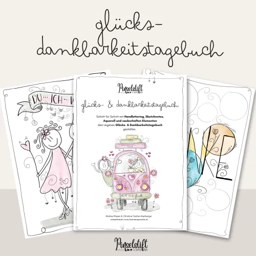

Kreatives Glücks- Dankbarkeitstagebuch
Produktprofil · Marktplatz-Daten 2026-10-13 · Verkaufsseiten-Recherche 2026-10-13 · Kategorien: Personal Development, Personal Development, Hobby & Craft
- Kreatives Glücks- Dankbarkeitstagebuch ist ein/e E-Book in Personal Development und Personal Development, vertrieben über den Digistore24-Marktplatz von Anbieter wieserkreativ, gelistet seit 2024-08-10.
- Listenpreis $31.24; Digistore24 meldet — Checkout-Konversion, — Stornierungsquote und 20 % Affiliate-Provision.
- Verdienst pro Verkauf (Affiliate): $6.25 (Anbieter-seitige Statistik, keine Prognose).
Interesse an Kreatives Glücks- Dankbarkeitstagebuch? Aktueller Preis, Boni und Garantiebedingungen finden Sie auf der offiziellen Seite des Anbieters:
Offizielle Verkaufsseite ansehen
Affiliate-Link (Werbung) — wir verdienen ggf. eine Provision, ohne Mehrkosten für Sie.

Marktplatz-Daten
| Produkttyp | E-Book |
|---|---|
| Preis | $31.24 (Single payment) |
| Affiliate-Provision | 20 % |
| Garantie/Rückgabe | Laut Verkaufsseite des Anbieters — vor dem Kauf auf der offiziellen Seite prüfen |
| Anbieter | wieserkreativ (gelistet seit 2024-08-10) |
| Marktplatz-Statistiken* | Checkout-Konversion — · Stornoquote — · Verdienst/Verkauf $6.25 |
* Anbieter-seitige Statistiken von Digistore24; sie hängen von der Traffic-Qualität ab und sind keine Prognose.
Marktplatz-Beschreibung des Anbieters
Wenn du auch eine kreative Seele bist und dieses Glückstagebuch empfiehlst freuen wir uns auf eine gute Kooperation. ______________ Bewerbungstext: Mit diesem Workbook lernst du einfache Grafiken und Schriften/Handletterings zeichnen, brauchst keine Vorkenntnisse und gestaltest dein persönliches Glückstagebuch, das dir deine täglichen Glücksmomente vor Augen führt. Wir haben sie alle, unsere kleinen und größeren Glücksmomente, wir müssen sie uns nur bewusst machen. Und hier hilft das liebevoll gestaltete Glücks- und Dankbarkeitstagebuch von den Pinselstiften. Mit dem Glücks- und Dankbarkeitstagebuch findest du heraus, was dir gut tut. Ein Glückstagebuch hilft dir mit Spaß und Freude deine persönlichen Happy Moments zu finden und durch diese bewusste und regelmäßige Aufspüren, erfährst du ein MEER an Glücksgefühlen – das wirkt sich positiv auf deine Stimmung und dein seelisches und körperliches Wohlbefinden aus. WAS ERWARTET DICH? Auf 100 Seiten bekommst du einen Leitfaden, der dich auf dem Weg zu deinem persönlichen Glücks- und Dankbarkeitstagebuch begleitet. Mehr Achtsamkeit: Fokus auf das, was wirklich zählt im Leben Weniger Stress: tägliche Kreativeinheit = spürbare Entlastung Wissenschaftlich bewiesen: Dankbarkeit fördert langfristiges Wohlbefinden Kreativer Ausdruck: Platz für Gedanken, Zitate, etc. Wunderschönes Geschenk: Für Herzensmenschen oder dich selbst Dieser kreative Leitfaden zu ein bisschen Glück enthält: - Informationen zum Glückstagebuch führen, zu vielen verschiedenen Themen, die uns in unserem Leben begleiten wie zB Veränderungen, Herausforderungen, Selbstliebe, Selbstreflexion, etc. - Du spürst in diesem Glücks- und Dankbarkeitstagebuch deine täglichen Happy Moments auf, die dir in Zukunft positive Energie geben, weil du sie bewusst wahrnimmst. - Wie erkenne ich meine täglichen Glücklichmacher? - Einblicke in verschiedene Zeichenstile wie Sketchnotes, Zentangle oder Line Art. - Das Thema Bullet Journaling für deine Glücksmonate, Glückswochen, usw. - In diesem Leitfaden gibt es ganzseitige Sujets, die du nachzeichnen kannst bzw. die dich anregen, deiner Kreativität freien Lauf zu lassen. - Ausgewählte Sprüche gelettert und gezeichnet. - Tipps & Tricks fürs unperfekte Zeichnen - du wirst erstaunt sein, was DU alles kannst. - Handlettering Basics, Pinselstift-Methode, Aquarell-ieren, Verzaubern mit "Dingle-Dongels" - ... und einfach pure Freude beim kreativen Gestalten.
Von der Verkaufsseite des Anbieters
Seitentitel: Glücks-, Dankbarkeitstagebuch - ein kreatives Arbeitsbuch - Digistore24
Abschnitts-Überschriften
- Zeichnen & Malen entspannt Körper & Geist!
- Zeichnen & Malen entspannt Körper & Geist!
- Zeichnen & Malen entspannt Körper & Geist!
Einstiegstext
Mit diesem Workbook lernst du einfache Grafiken und Schriften/Handletterings zeichnen, brauchst keine Vorkenntnisse und gestaltest dein persönliches Glückstagebuch, das dir deine täglichen Glücksmomente vor Augen führt. Wir haben sie alle, unsere kleinen und größeren Glücksmomente, wir müssen sie uns nur bewusst machen. Und hier hilft das liebevoll gestaltete Glücks- und Dankbarkeitstagebuch von den Pinselstiften.
Mit dem Glücks- und Dankbarkeitstagebuch findest du heraus, was dir gut tut. Ein Glückstagebuch hilft dir mit Spaß und Freude deine persönlichen Happy Moments zu finden und durch diese bewusste und regelmäßige Aufspüren, erfährst du ein MEER an Glücksgefühlen – das wirkt sich positiv auf deine Stimmung und dein seelisches und körperliches Wohlbefinden aus.
Auf 100 Seiten bekommst du einen Leitfaden, der dich auf dem Weg zu deinem persönlichen Glücks- und Dankbarkeitstagebuch begleitet.
- Informationen zum Glückstagebuch führen, zu vielen verschiedenen Themen, die uns in unserem Leben begleiten wie zB Veränderungen, Herausforderungen, Selbstliebe, Selbstreflexion, etc.
Recherche-Methode: rohes HTML · 1452 Wörter · Qualität: medium · recherchiert am 2026-10-13. Vollständige Recherche-Datei (MD) ↗
Wie Produkte dieser Art geliefert werden
Allgemeiner Hinweis zu diesem Produkttyp (keine anbieterspezifische Anleitung): E-Books auf Digistore24 werden als digitaler Download geliefert (meist PDF/EPUB): direkt nach dem Checkout erhalten Sie einen Downloadlink oder Mitgliederzugang und können auf jedem Gerät lesen. Für die genaue Anwendung von Kreatives Glücks- Dankbarkeitstagebuch sind die offizielle Verkaufsseite und die enthaltenen Materialien maßgeblich.
Gut zu wissen
- Keine Garantie-Formulierung in unserer Recherche gefunden — bestätigen Sie das Rückgabefenster auf der offiziellen Seite, bevor Sie kaufen.
- Marktplatz-Zahlen (Preis, Provision, Konversion, Stornoquote) — Quelle: offizielle Digistore24-Marktplatz-API (Affiliate-Sicht), Stand 2026-10-13. Gegenprüfung: Marktplatz-Suche nach Produkt-ID 564765.
- Verkaufsseiten-Zitate — Quelle: https://www.digistore24.com/product/564765, abgerufen 2026-10-13 (Methode: rohes HTML). Verify: offizielle Seite öffnen.
- Garantie / Rückgabe — vom Anbieter festgelegt; vor dem Kauf auf der Verkaufsseite bestätigen.
- Nicht von uns geprüft: Produktqualität, Ergebnisse, Testimonials — kein Praxistest für dieses Listing durchgeführt.
Häufige Fragen zu Kreatives Glücks- Dankbarkeitstagebuch
Antworten aus dem Marktplatz-Snapshot (2026-10-13) und der Verkaufsseiten-Recherche (2026-10-13); Anbieteraussagen sind inline gekennzeichnet.
Was ist Kreatives Glücks- Dankbarkeitstagebuch?
Kreatives Glücks- Dankbarkeitstagebuch ist ein Angebot des Typs „E-Book" im Digistore24-Marktplatz, Anbieter: wieserkreativ, gelistet seit 2024-08-10. Eingepflegt unter Persönlichkeitsentwicklung und Persönlichkeitsentwicklung. Digistore24 wickelt Checkout, Lieferung und Rückgaben ab.
Wie viel kostet Kreatives Glücks- Dankbarkeitstagebuch?
Der Digistore24-Marktplatz listet es für $31.24 (single payment). Preise legt der Anbieter fest und können sich ändern — der Marktplatz-Eintrag oben zeigt den Schnappschuss; die offizielle Verkaufsseite zeigt den aktuellen Preis.
Gibt es eine Geld-zurück-Garantie für Kreatives Glücks- Dankbarkeitstagebuch?
Unsere Verkaufsseiten-Recherche hat keine explizite Garantie-Formulierung gefunden. Viele Digistore24-Produkte bieten 60 Tage Geld-zurück, aber das legt jeder Anbieter selbst fest — bestätigen Sie es auf der offiziellen Verkaufsseite, bevor Sie kaufen.
Ist Kreatives Glücks- Dankbarkeitstagebuch seriös?
Wir bewerten keine Seriosität — wir veröffentlichen überprüfbare Zahlen: Anbieter wieserkreativ (gelistet seit 2024-08-10), Checkout-Konversion —, Stornoquote —, Affiliate-Verdienst/Verkauf $6.25 (alles Anbieter-seitige Marktplatz-Statistiken). Lesen Sie unsere 6-Punkte-Bewertungsmethode und entscheiden Sie anhand der Zahlen — oder diskutieren Sie Kreatives Glücks- Dankbarkeitstagebuch auf GitHub.
Wo kann ich Kreatives Glücks- Dankbarkeitstagebuch sicher kaufen?
Nur über die offizielle Verkaufsseite, die auf dieser Seite verlinkt ist (Checkout und Rückgaben laufen über Digistore24). Prüfen Sie dort Preis und Garantie vor der Bestellung. Der Link ist ein Affiliate-Link — der Kauf unterstützt diese Website ohne Mehrkosten für Sie.
Wie erhalte ich Kreatives Glücks- Dankbarkeitstagebuch nach der Zahlung?
Der Checkout läuft über Digistore24: Nach der Zahlung erhalten Sie Ihren Zugang oder Download per E-Mail und in Ihrem Digistore24-Kundenkonto. Lieferdetails für diesen Produkttyp: E-Books auf Digistore24 werden als digitaler Download geliefert (meist PDF/EPUB): direkt nach dem Checkout erhalten Sie einen Downloadlink oder Mitgliederzugang und können auf jedem Gerät lesen. Bei Problemen kann der Digistore24-Käufersupport Ihre Bestellung wiederherstellen.
Alle 50 Käuferfragen zu Persönlichkeitsentwicklung — das komplette Kategorie-FAQ.
Kreatives Glücks- Dankbarkeitstagebuch auf Reddit diskutieren
In Community-Threads vergleichen echte Käufer Erfahrungen. Wir verlinken Communities, keine einzelnen Posts — Threads verschwinden, Subreddits bleiben:
- Reddit-Suche nach „Kreatives Glücks- Dankbarkeitstagebuch" — Live-Ergebnisse, von uns nicht beeinflusst.
- Top-„Erfahrungs"-Treffer dieses Jahr — selbst nach Aktualität filtern.
Passendes auf Amazon.de
Physische Produkte und Zubehör, die häufig zusammen mit Kreatives Glücks- Dankbarkeitstagebuch gekauft werden:
- Personal Development auf Amazon.de — Top-Ergebnisse, Amazon-Ranking.
- Bestseller: Personal Development — live Liste von Amazon, von uns nicht kuratiert.
Werbung: Als Amazon-Partner verdient DigistorePicks DE an qualifizierten Käufen (Partner-tag adminstorede-21). Amazon setzt eigene Preise und Provisionen (niedrige einstellige Prozente — weit unter den 30–75% der Digistore24-Anbieter). Amazon ist ein Convenience-Angebot für Sachprodukte, kein Ersatz für das digitale Produkt oben.
Ähnliche Angebote in Persönlichkeitsentwicklung
Tage der Entscheidung – Erfolgreich LEBEN DEIN Seminar, wenn es um deine persönliche Weiterentwicklung geht. Lerne an nur 2,5 Tagen, wie du erreichbare Ziele se

Bis zu 10% Provision | 600.000€ Umsatzpotenzial für 2026 Marktplatz-Beschreibung Sichern Sie sich Ihren Anteil am Erfolg: Wir suchen exklusive Partner für ein 6

Glückscoach-Jahresausbildung Empfehlen Sie einen hochwertigen, kostenlosen Online-Einstieg zum Thema Glück & Lebensfreude , der Teilnehmer schrittweise zu e
Kreatives Glücks- Dankbarkeitstagebuch ist auch gelistet in
Persönlichkeitsentwicklung (711 Produkte) · Hobby & Handwerk (181 Produkte)
Ähnliche Preislage in Persönlichkeitsentwicklung
Sicher Rechnen im Alltag & Beruf Mathematik-Grundlagen für Lehrlinge & Azubis – perfekt für Affiliates mit Zielgruppe Ausbildung, Berufsschule & Nac
Algebra einfach verstehen Algebra endlich logisch verstehen – für Lehrlinge & Azubis in Ausbildung und Berufsschule Viele Lehrlinge und Azubis scheitern in
Proportionen, Dreisatz & Verhältnisrechnung Dreisatz und Proportionen endlich verstehen – für Lehrlinge & Azubis Viele Lehrlinge und Azubis haben Schwie
Ähnliche Suchanfragen
Wo Sie es sich ansehen können
Wo Sie es sich ansehen können
Aktuelle Preise, Garantie und Boni finden Sie auf der offiziellen Verkaufsseite:
Offizielle Verkaufsseite ansehen
Das ist ein Affiliate-Link (Werbung) — kaufen Sie darüber, verdienen wir ggf. eine Provision, ohne Mehrkosten für Sie.
Quellen & weiterführende Informationen
- Offizielle Verkaufsseite (aktueller Preis, Garantie, Boni): www.digistore24.com/product/564765 (Affiliate-Link)
- Öffentliche Digistore24-Produktseite: digistore24.com/product/564765
- Vollständige Recherche-Datei (Markdown, versioniert): content/products/49031-kreatives-gl-cks-dankbarkeitstagebuch.md
- Affiliate-Supportseite des Anbieters: www.wieserkreativ.com/pages/affiliateseite-pinselstift-gluck
- Marktplatz-Kategorie: Persönlichkeitsentwicklung
Wie wir Produkte wie Kreatives Glücks- Dankbarkeitstagebuch bewerten
Sechs Prüfungen, ausschließlich mit offiziellen Marktplatz-Zahlen. Die vollständige Bewertungsmethode lesen · unsere Recherche-Standards & Kennzeichnung.
Fragen oder eigene Erfahrungen mit Kreatives Glücks- Dankbarkeitstagebuch?
Praxis-Tests veröffentlichen wir erst, nachdem wir ein Produkt selbst gekauft haben — aber Ihre Erfahrung hilft anderen Lesern: Diskussion zu Kreatives Glücks- Dankbarkeitstagebuch auf GitHub starten/verfolgen. Falsche Zahl gefunden? Korrektur melden — jede Seite zeigt ihre Datenstände, Korrekturen gelten für die ganze Website.